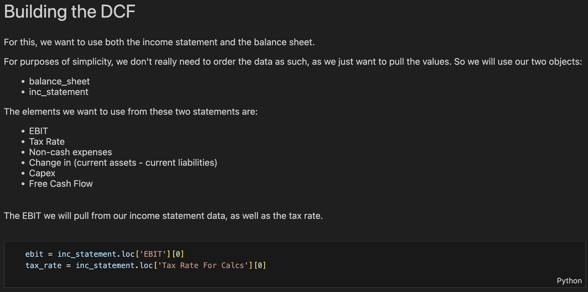
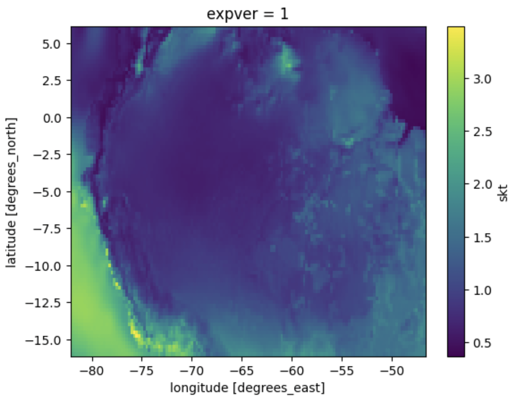
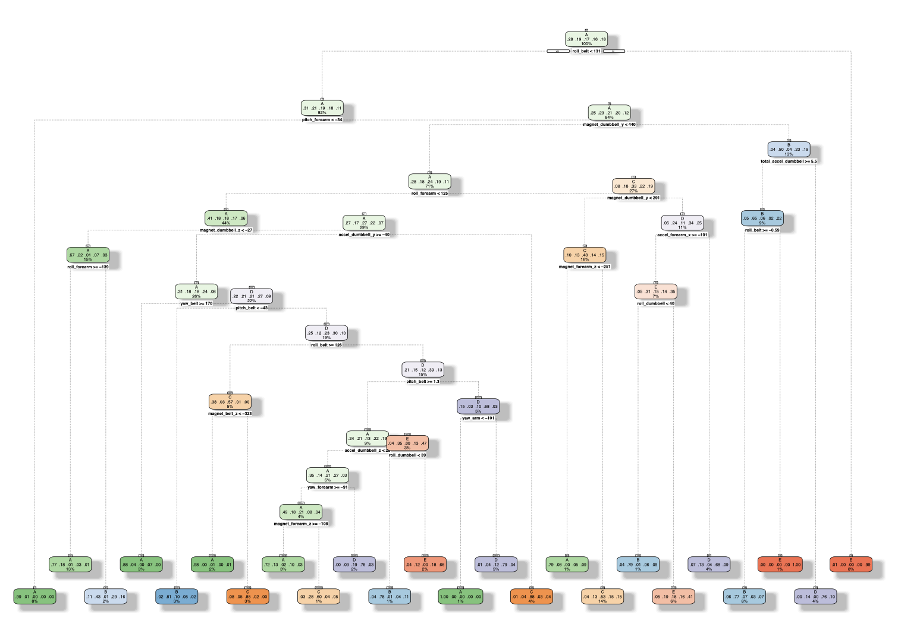

My Projects
Personal projects developed to expand and demonstrate skills across financial modelling, data science, and quantitative analysis. These sit alongside professional work and are updated as I explore new tools and subject matter. Many remain works-in-progress by design — the point is continued learning, not finished products.
Building a DCF Model using Python
An introduction to financial modelling using Python libraries.
- Python
- Financial Modelling
- Markdown


Geospatial Analysis Fundamentals
An introduction to geospatial analysis in Python.
- Python
- Geospatial Analysis
- Climate

Exercise Prediction Using ML
Using machine learning techniques to predict which exercises are performed using fitness devices.
- R
- Machine Learning
- RMarkdown

Experience
- Led strategic planning with senior stakeholders to quantify and report on targeted business initiatives across market operations.
- Implemented a centralised, scalable reporting solution integrating all business areas into a single source of truth.
- Built real-time risk reporting processes for a large financial institution, managing a team across the full data lifecycle from sourcing to BI dashboards.
- Improved efficiency, accuracy, and timeliness of the client's end-to-end reporting process.
- Financial engineer on the team that built a novel risk management and reporting system for South Africa's largest bank — covering the group's entire suite of financial products.
- Designed and implemented extensive SQL pipelines to model financial instruments at group scale using novel ETL techniques.
- Technical role combining R, statistical analysis, NLP, and forecasting to identify customer segments and drive conversion.
Read case study → - Led a project with the data science team that improved efficiency of customer data sourcing by 99%.
Read case study →
- Selected for the competitive 70-hour programme developed with senior professionals from top-tier banks, asset managers, and private equity funds.
- Modelling covered DCF, LBO, Comparables, M&A, Growth Capital, Distress & Restructuring, and Infrastructure Finance.
Research
Articles and research on financial engineering, quantitative methods, and capital markets. PDFs are available to download below.
[Article Title]
[Short abstract — 2–3 sentences summarising the research question, methodology, and key finding.]
Download PDF ↓[Article Title]
[Short abstract — 2–3 sentences summarising the research question, methodology, and key finding.]
Download PDF ↓About Me
I'm a financial engineer and quantitative analyst with five years of experience building data infrastructure and risk systems for financial institutions. My core expertise is in SQL-driven financial modelling, ETL pipelines, and business intelligence — developed through large-scale delivery projects at South Africa's leading banks and corporates.
I hold an MComm in Economics from Stellenbosch University and a Financial Risk Manager (FRM) qualification from GARP, alongside an MBA from the Saïd Business School at Oxford — where I focused on strategy, impact investing, and the application of capital to systemic change.
Outside of work, I care about nature and sustainability. I grew up on a farm in the Cederberg and that grounding shapes the problems I want to work on: the intersection of finance, data, and climate.
My Resume